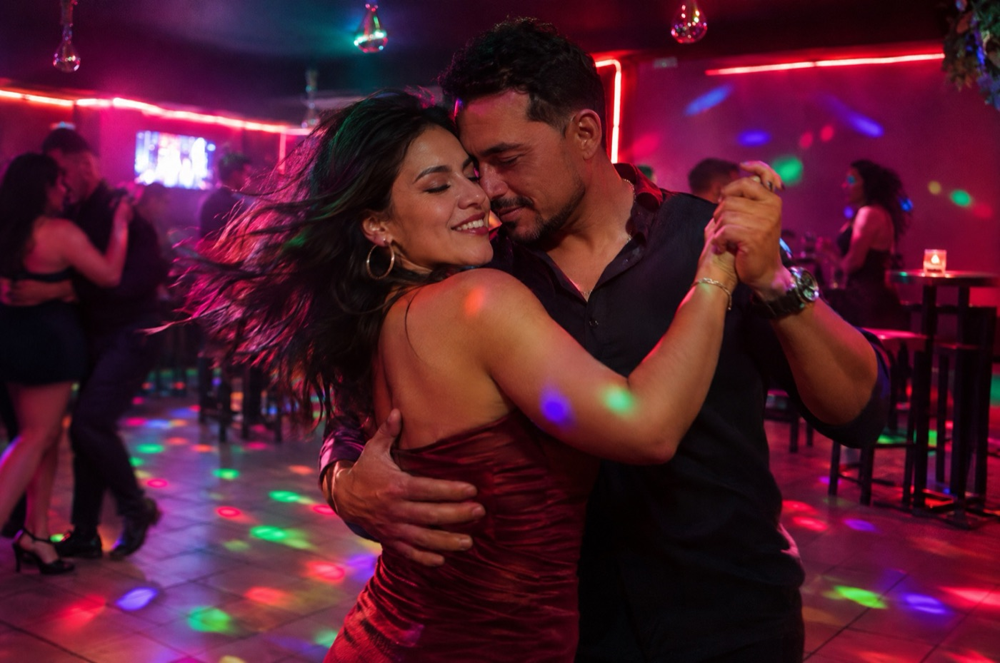

Así es una noche en Alegría
Ambiente · fotos del disco pub latino Alegría 2.0 en Vallecas
Luces de colores, una pista que no se vacía y un micro que pasa de mano en mano. Mira cómo se vive una noche aquí antes de venir.
Una noche cualquiera
Del primer brindis a la última canción
6noches a la semana, de martes a domingo
5:30hasta esa hora los viernes, sábados y domingos
100%música latina y karaoke toda la noche
Galería